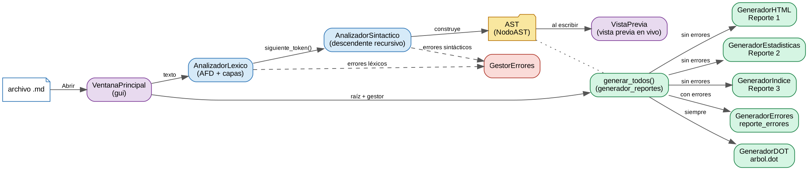
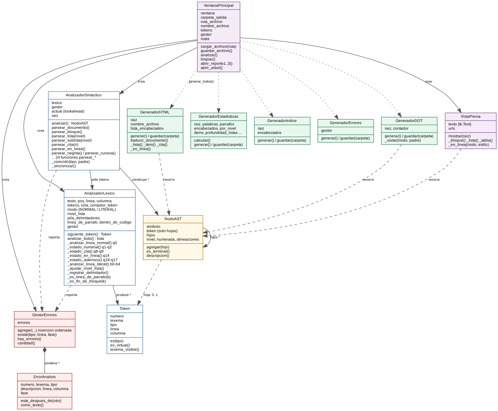
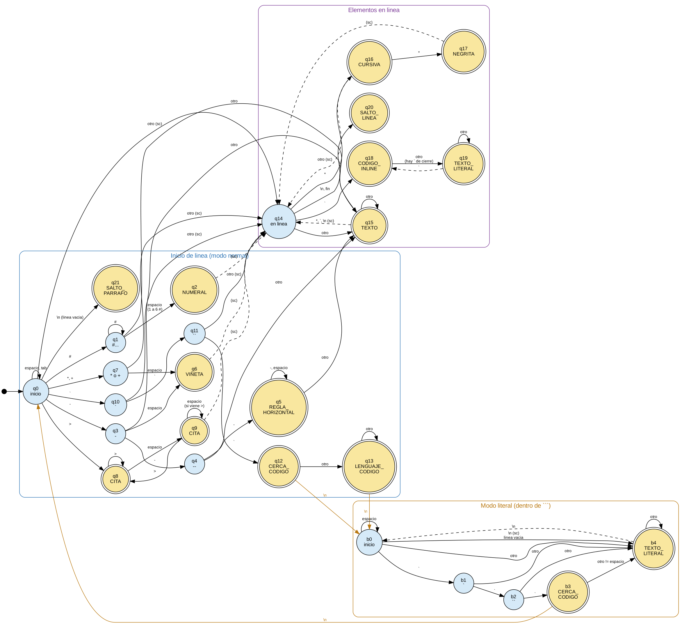
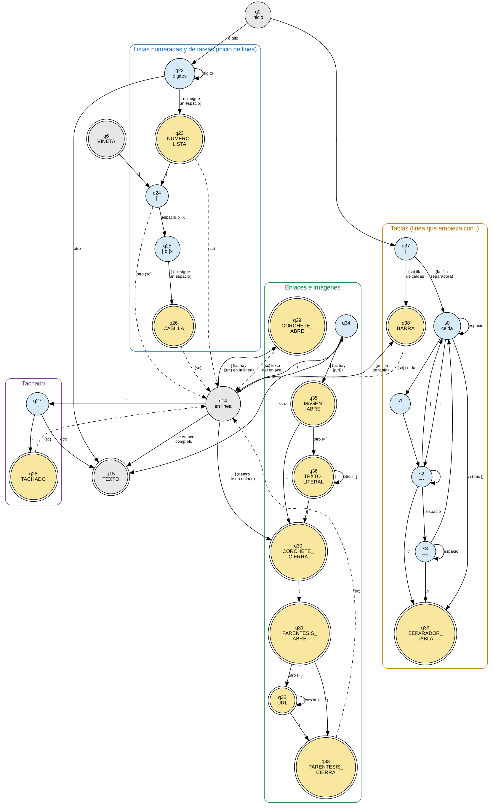
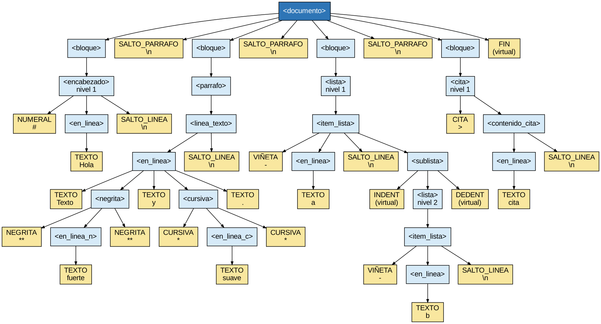
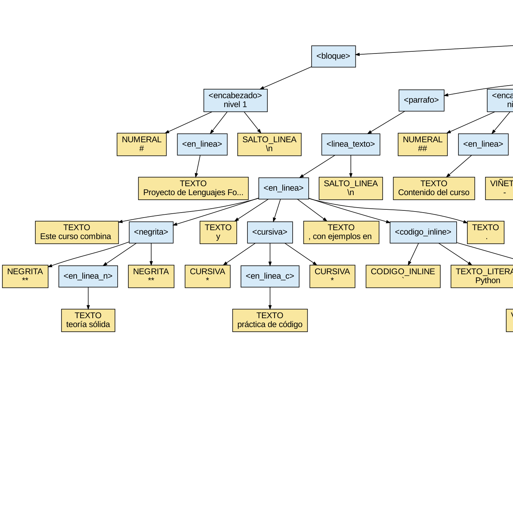
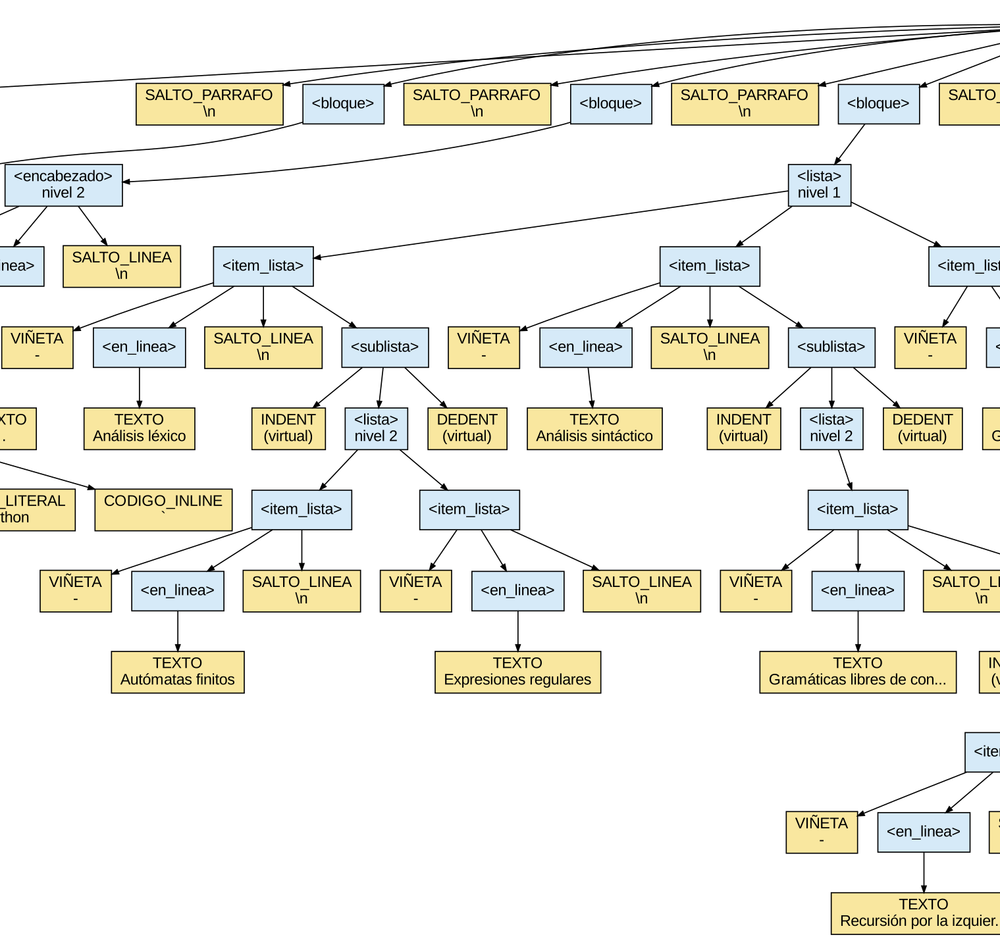
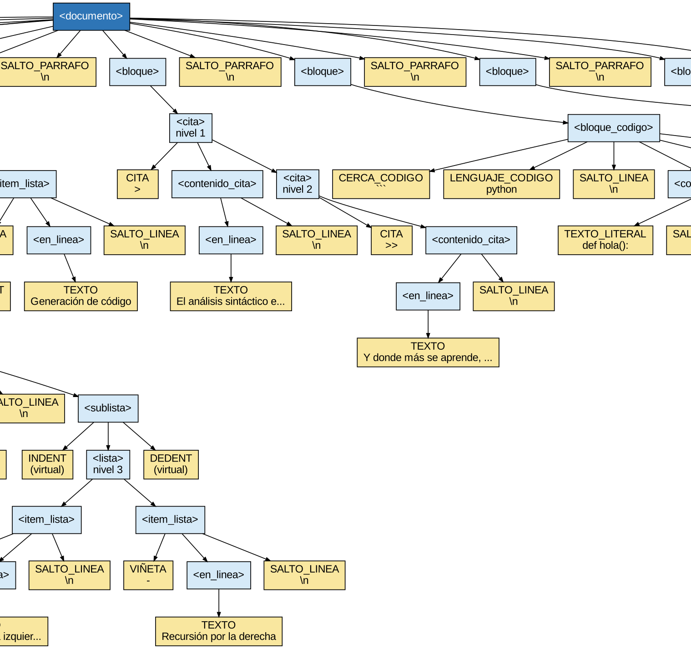
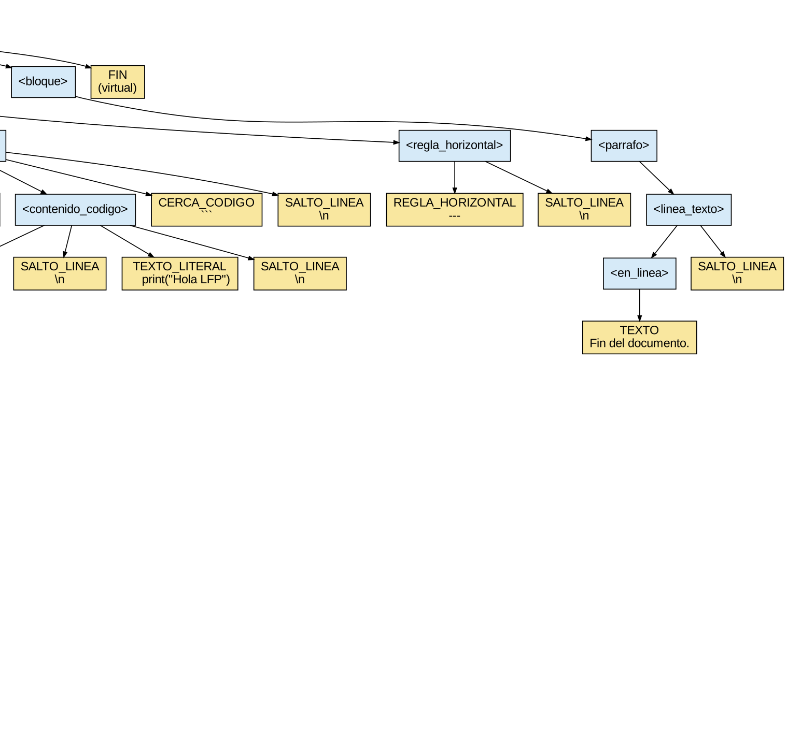

Manual Técnico
MarkdownCheck — analizador léxico-sintáctico de Markdown a HTML
Proyecto 2 · Lenguajes Formales y de Programación · Sección B+ · Segundo semestre 2026
Diego Alejandro Barrios · Facultad de Ingeniería, Universidad de San Carlos de Guatemala
Contenido
- Introducción
- Arquitectura del sistema
- Diagrama de clases
- Análisis léxico: tokens y AFD
- Gramática libre de contexto
- Parser descendente recursivo
- Árbol de derivación y Graphviz
- Errores y estrategia de recuperación
- Generación de reportes
- Alcance opcional
- Pruebas
- Decisiones de diseño
- Anexo: árbol de derivación completo del ejemplo del enunciado
1. Introducción
MarkdownCheck lee un documento escrito en un subconjunto de Markdown, lo analiza en dos fases (léxica y sintáctica) y lo traduce a HTML recorriendo el árbol de derivación que construye el parser. Además genera estadísticas del documento, una tabla de contenido, la tabla de tokens, la tabla de errores y el árbol de derivación en Graphviz.
Subconjunto reconocido: encabezados (# a ######), párrafos, negrita
(**), cursiva (*), código en línea (`), listas no ordenadas
(-, *, +) con anidamiento por indentación, citas (>) anidadas,
bloques de código delimitados por ``` y regla horizontal (---).
Alcance opcional (completo, sección 10): listas numeradas (1.), listas
de tareas (- [ ] / - [x]), tachado (~~), enlaces ([texto](url)),
imágenes (), tablas con |, vista previa en vivo dentro de la
ventana, advertencia de anidamiento con un máximo configurable y resaltado
de sintaxis de los bloques de código en el Reporte 1.
Tecnologías: Python 3.10 o superior, Tkinter para la interfaz, Graphviz
para convertir arbol.dot en imagen. Se probó con Python 3.10, 3.12 y 3.13.
Restricciones cumplidas:
| Restricción del enunciado | Cómo se cumple |
|---|---|
Sin el módulo re para tokenizar |
El AFD recorre el texto carácter por carácter con un índice (self.pos). Las clases de caracteres son listas explícitas (alfabeto.py). |
| Sin librerías de parsing (ply, lark, antlr4…) | El parser es descendente recursivo, escrito a mano: una función por no terminal. |
| Sin librerías de conversión Markdown | El HTML lo produce GeneradorHTML recorriendo el AST. |
| HTML a partir del árbol, no por sustitución de texto | Los generadores reciben solo la raíz del árbol; nunca ven el texto original. |
Además, por decisión propia (D-18), el código no usa if ternarios,
lambda, slicing, sorted(), enumerate, set(), decoradores ni
comprensiones, para que cada línea se pueda explicar y modificar en vivo.
2. Arquitectura del sistema

El flujo de un análisis es:
VentanaPrincipaltoma el texto del editor y crea unGestorErrores, unAnalizadorLexicoy unAnalizadorSintactico.AnalizadorSintacticopide tokens consiguiente_token()a medida que los necesita y construye el árbol (NodoAST).AnalizadorLexicoanaliza una línea completa cada vez que se le acaban los tokens: el AFD reconoce los tokens de la línea y tres capas posteriores agreganINDENT/DEDENT, validan los delimitadores y los ponen en una cola.- Ambos analizadores registran sus errores en el
GestorErrores, que los mantiene ordenados por posición. Ninguno se detiene ante un error. generar_todos()decide qué reportes escribir según haya o no errores.
Estructura de carpetas
Proyecto2/
├── src/
│ ├── main.py punto de entrada
│ ├── lexico/ alfabeto.py, token.py, analizador_lexico.py
│ ├── sintactico/ nodo_ast.py, analizador_sintactico.py
│ ├── errores/ error_analisis.py, gestor_errores.py
│ ├── reportes/ plantilla.py, recorridos.py, generador_*.py
│ │ └── recursos/ highlight.js y su tema (resaltado, D-36)
│ └── gui/ ventana_principal.py, vista_previa.py
├── tests/ pruebas de consola (una suite por fase)
├── examples/ archivos .md de entrada y casos/
└── docs/ diseño, manuales y casos de prueba
Las dependencias van en un solo sentido: lexico no conoce a nadie más que a
errores; sintactico conoce a lexico; reportes solo conoce el árbol;
gui junta todo. Así se puede probar cada fase por separado desde consola.
3. Diagrama de clases

| Clase | Responsabilidad | Lo que no hace |
|---|---|---|
Token |
Guarda número, lexema, tipo, línea y columna de un token. | — |
AnalizadorLexico |
AFD manual, INDENT/DEDENT, pila de delimitadores, cola de tokens. Expone siguiente_token(). |
No conoce el árbol ni el HTML. |
NodoAST |
Un nodo del árbol: símbolo, token (solo hojas), hijos y atributos (nivel; numerada en listas; alineaciones en tablas). |
— |
AnalizadorSintactico |
Una función por no terminal; construye el árbol y se recupera de errores. | No lee caracteres. |
ErrorAnalisis |
Un registro de la tabla de errores. | — |
GestorErrores |
Acumula los errores de las dos fases, ordenados por posición. | — |
GeneradorHTML |
Reporte 1: traduce el árbol a HTML. | No mira el texto original. |
GeneradorEstadisticas |
Reporte 2: cuenta nodos del árbol. | — |
GeneradorIndice |
Reporte 3: tabla de contenido con anclas al Reporte 1. | — |
GeneradorErrores |
Tabla de errores en HTML. | — |
GeneradorDOT |
arbol.dot con el árbol de derivación real. |
— |
VentanaPrincipal |
Interfaz Tkinter: editor, tablas, árbol, vista previa, botones de reportes y aviso de anidamiento. | No analiza nada por sí misma. |
VistaPrevia |
Dibuja el documento formateado en un tk.Text recorriendo el árbol. |
No mira el texto original. |
4. Análisis léxico: tokens y AFD
4.1 Tokens de la sección 4.5 del enunciado
| Tipo | Lexema | Dónde se reconoce | Ejemplo |
|---|---|---|---|
NUMERAL |
# a ###### |
Inicio de línea (o tras CITA), seguido de espacio |
## Título |
VIÑETA |
-, *, + |
Inicio de línea (tras la sangría), seguido de espacio | - Elemento |
INDENT |
vacío (virtual) | Sube un nivel de lista; uno por nivel | (sin lexema visible) |
DEDENT |
vacío (virtual) | Baja un nivel de lista; uno por nivel | (sin lexema visible) |
CITA |
>, >>, > >… |
Inicio de línea; el nivel es la cantidad de > |
>> Cita |
CERCA_CODIGO |
``` |
Inicio de línea | ```python |
REGLA_HORIZONTAL |
--- o más |
Línea que solo contiene guiones (y espacios al final) | --- |
NEGRITA |
** |
Dentro de una línea | **importante** |
CURSIVA |
* |
Dentro de una línea, fuera de posición de viñeta | *énfasis* |
CODIGO_INLINE |
` |
Dentro de una línea | `variable` |
TEXTO |
texto plano | Todo lo que no es delimitador | Lenguajes Formales |
SALTO_PARRAFO |
\n |
Línea vacía o de solo espacios | (línea vacía) |
4.2 Tokens agregados
| Tipo | Lexema | Para qué existe |
|---|---|---|
SALTO_LINEA |
\n |
Marca el fin de cada línea no vacía. Sin él, el parser no sabe dónde termina un encabezado o un ítem. |
TEXTO_LITERAL |
contenido literal | Interior de un bloque de código (una por línea) o de un código en línea. Aparece en la gramática de referencia pero no en la tabla de tokens del enunciado. |
LENGUAJE_CODIGO |
python, java… |
Texto que sigue a la cerca de apertura. Da el class="language-python". |
FIN |
vacío | Fin de archivo. Le permite al parser saber que no queda nada. |
4.3 Reglas de prioridad
- Viñeta vs. cursiva.
*solo esVIÑETAen posición inicial de línea y seguido de espacio. En cualquier otro lugar entra al reconocimiento de énfasis. - Negrita vs. cursiva (maximal munch). Al ver
*, el AFD mira el siguiente carácter: si es otro*, reconoceNEGRITA. - Encabezado vs. texto.
#solo formaNUMERALal inicio de línea y seguido de espacio.#sinespacioesTEXTO. - Regla vs. viñeta.
-(guion + espacio) esVIÑETA. Tres o más guiones y nada más en la línea esREGLA_HORIZONTAL.--o--textoesTEXTO. - Bloque de código. Tras
```de apertura el léxico entra en modo literal: cada línea completa es unTEXTO_LITERAL, sin buscar ningún otro token, hasta la cerca de cierre. - Código en línea. Tras
`todo hasta el siguiente`del mismo bloque esTEXTO_LITERAL; adentro no se reconocen*ni**. En un párrafo, el cierre puede estar en una línea siguiente: entonces llega unTEXTO_LITERALpor línea, con elSALTO_LINEAentre ellos (D-02). - Número de lista vs. texto (alcance opcional). Uno o más dígitos, un
.y un espacio al inicio de línea formanNUMERO_LISTA.2024.fueo3.5 essonTEXTO. - Casilla vs. enlace. Justo después del marcador de un ítem,
[ ]o[x]seguido de espacio esCASILLA.- [x](url)es un enlace. - Tachado (maximal munch).
~~esTACHADO; un~solo es texto. - Enlace e imagen solo si están completos.
[esCORCHETE_ABRE(y![esIMAGEN_ABRE) solo si en la misma línea viene el]y, pegado,(url)sin espacios. Si no, el corchete esTEXTO, sin error (D-32). - Tabla. Una línea que empieza con
|es una fila de tabla: cada|esBARRA. Si solo tiene celdas como---,:--,--:o:-:, la línea completa es unSEPARADOR_TABLA. Fuera de una tabla,|es texto.
4.4 Diagrama del AFD
Doble círculo = estado de aceptación. "(sc)" significa que la transición se hace sin consumir el carácter (lookahead): el AFD nunca retrocede el índice. El autómata tiene dos modos: normal y literal (dentro de un bloque de código).

4.5 Estados
| Estado | Significado | Acepta |
|---|---|---|
q0 |
Inicio de línea (modo normal). Consume la sangría. | — |
q1 |
Leyendo # consecutivos |
— |
q2 |
# + espacio |
NUMERAL (≤ 6) / error ENCABEZADO_INVALIDO (> 6) |
q3 |
Leído un - al inicio |
— |
q4 |
Leídos -- |
— |
q5 |
Leídos --- o más |
REGLA_HORIZONTAL (al llegar a fin de línea) |
q6 |
Marcador de lista + espacio | VIÑETA |
q7 |
Leído * o + al inicio |
— |
q8 |
Leyendo > |
CITA |
q9 |
> + espacio (puede venir otro >) |
CITA |
q10 |
Leído ` al inicio |
— |
q11 |
Leídos `` al inicio |
— |
q12 |
Leídos ``` |
CERCA_CODIGO |
q13 |
Resto de la línea de apertura | LENGUAJE_CODIGO |
q14 |
Inicio de elemento en línea | — |
q15 |
Leyendo texto plano | TEXTO |
q16 |
Leído * en línea |
CURSIVA (si lo siguiente no es *) |
q17 |
Leído ** |
NEGRITA |
q18 |
Leído ` en línea |
CODIGO_INLINE |
q19 |
Dentro de código en línea | TEXTO_LITERAL |
q20 |
Fin de línea | SALTO_LINEA |
q21 |
Línea vacía | SALTO_PARRAFO |
b0 |
Inicio de línea en modo literal | — |
b1, b2, b3 |
`, ``, ``` en modo literal |
CERCA_CODIGO (cierre) en b3 |
b4 |
Línea de contenido del bloque | TEXTO_LITERAL |
4.6 Transiciones del modo normal
| Desde | Carácter | Hacia | Nota |
|---|---|---|---|
q0 |
espacio, tab | q0 |
Cuenta la sangría |
q0 |
\n (línea sin contenido) |
q21 |
|
q0 |
# |
q1 |
|
q0 |
- |
q3 |
|
q0 |
*, + |
q7 |
|
q0 |
> |
q8 |
|
q0 |
` |
q10 |
|
q0 |
otro | q14 |
Sin consumir |
q1 |
# |
q1 |
|
q1 |
espacio | q2 |
|
q1 |
otro | q15 |
Los # se vuelven TEXTO |
q3 |
espacio | q6 |
|
q3 |
- |
q4 |
|
q3 |
otro | q15 |
|
q4 |
- |
q5 |
|
q4 |
otro | q15 |
|
q5 |
-, espacio |
q5 |
|
q5 |
\n |
acepta | REGLA_HORIZONTAL |
q5 |
otro | q15 |
Ej.: ---texto |
q7 |
espacio | q6 |
|
q7 |
otro | q14 |
Sin consumir: el * se reevalúa como énfasis |
q8 |
> |
q8 |
|
q8 |
espacio | q9 |
|
q9 |
espacio | q9 |
Solo si más adelante viene otro > |
q8 |
otro | acepta | CITA (el parser revisa la separación, D-11) |
q9 |
> |
q8 |
Notación > > |
q9 |
otro | acepta | CITA; el contenido empieza en q14 |
q10 |
` |
q11 |
|
q10 |
otro | q14 |
Sin consumir: es código en línea |
q11 |
` |
q12 |
|
q11 |
otro | q14 |
Sin consumir |
q12 |
otro ≠ \n |
q13 |
Cambia a modo literal al terminar la línea |
q14 |
* |
q16 |
|
q14 |
` |
q18 |
|
q14 |
\n o fin |
q20 |
|
q14 |
otro | q15 |
|
q15 |
otro ≠ *, `, \n |
q15 |
|
q15 |
*, `, \n |
acepta | TEXTO, sin consumir el delimitador |
q16 |
* |
q17 |
Maximal munch |
q16 |
otro | acepta | CURSIVA |
q18 |
otro ≠ `, \n |
q19 |
Solo si hay ` de cierre en el bloque (D-02, D-21) |
q19 |
otro ≠ `, \n |
q19 |
|
q19 |
` |
acepta | TEXTO_LITERAL, luego CODIGO_INLINE |
4.7 Transiciones del modo literal
| Desde | Carácter | Hacia |
|---|---|---|
b0 |
espacio | b0 (solo para buscar la cerca) |
b0 |
` |
b1 → b2 → b3 |
b0 |
otro | b4 |
b3 |
espacios hasta \n |
acepta CERCA_CODIGO, vuelve a modo normal |
b1, b2, b3 |
otro | b4 (la línea es contenido) |
b4 |
otro ≠ \n |
b4 |
b4 |
\n |
acepta TEXTO_LITERAL (la línea completa, con su sangría) |
b0 |
\n (línea vacía) |
acepta TEXTO_LITERAL vacío |
b0 |
fin de archivo | error BLOQUE_CODIGO_SIN_CERRAR |
4.8 Capas posteriores al autómata
El AFD es determinista y no tiene memoria. Hay tres cosas que necesitan
memoria y por eso van fuera del autómata, como capas que el
AnalizadorLexico aplica después. En el manual técnico hay que decirlo así.
- Contador de nivel de lista. Al aceptar una
VIÑETA, el léxico compara el nivel de sangría (espacios ÷ 2) connivel_lista. Si sube, emite unINDENTpor cada nivel antes de la viñeta; si baja, unDEDENTpor cada nivel. Una línea que no es ítem (incluida una línea vacía) baja el nivel a 0. Al final del archivo, también. - Pila de delimitadores en línea. Cada vez que el AFD acepta una
NEGRITA, unaCURSIVAo unTACHADO, el token pasa por la pila: si es igual a la cima, la cierra (se saca); si no, abre (se mete). Al terminar el bloque, lo que quedó en la pila nunca se cerró: se reporta comoNEGRITA_SIN_CERRARoCURSIVA_SIN_CERRARy ese token pasa a serTEXTO. El bloque termina con su línea, salvo en un párrafo cuya línea siguiente también es de texto (D-02). La pila también la consulta el AFD en el caso***(D-04). El texto de un enlace y cada celda de una tabla son ámbitos propios: lo que se abre adentro se tiene que cerrar adentro (D-32, D-33). - Cola de tokens pendientes.
siguiente_token()entrega de esa cola; cuando se vacía, analiza la línea siguiente. Mientras la pila tenga algo no entrega nada, aunque la cola tenga tokens: todavía no se sabe si el delimitador se cierra o pasa a serTEXTO. Así el parser nunca recibe un delimitador sin pareja.
4.9 Mapa estado → método
Cada estado del diagrama corresponde a un método de AnalizadorLexico:
| Estados | Método |
|---|---|
| q0, q21 | _analizar_linea_normal() |
| q6, q7 | _estado_vineta() |
| q1, q2 | _estado_numeral() |
| q3, q4, q5 | _es_regla_horizontal(), _estado_regla() |
| q8, q9 | _estado_cita() |
| q10 a q13 | _estado_cerca_apertura() |
| q14 | _estado_en_linea() |
| q15 | _estado_texto() |
| q16, q17 | _estado_asterisco() |
| q18, q19 | _estado_codigo_inline() |
| q20 | _estado_fin_linea() |
| b0 a b4 | _analizar_linea_literal() |
Además, _es_linea_de_parrafo() y _es_fin_de_bloque() hacen el
lookahead que decide si un párrafo sigue en la línea siguiente (D-02): la
primera repite las decisiones de q0 sin consumir, y la segunda la usan la
pila de delimitadores, el código en línea y el caso *** para saber hasta
dónde llega el bloque.
4.10 Tokens del alcance opcional
| Tipo | Lexema | Dónde se reconoce | Ejemplo |
|---|---|---|---|
NUMERO_LISTA |
1., 10.… |
Inicio de línea (tras la sangría), seguido de espacio | 1. Primero |
CASILLA |
[ ], [x], [X] |
Después de VIÑETA o NUMERO_LISTA, seguida de espacio |
- [x] Hecho |
TACHADO |
~~ |
Dentro de una línea | ~~viejo~~ |
CORCHETE_ABRE |
[ |
Dentro de una línea, si el enlace está completo | [texto](url) |
IMAGEN_ABRE |
 |
CORCHETE_CIERRA |
] |
Cierre del texto de un enlace o de una imagen | |
PARENTESIS_ABRE |
( |
Justo después del ] |
|
URL |
lo que va entre ( y ) |
Destino; sin espacios, puede estar vacío | https://x.org |
PARENTESIS_CIERRA |
) |
Fin del destino | |
BARRA |
| | Cada | de una fila de tabla | | a | b | |
SEPARADOR_TABLA |
la fila completa | Fila de guiones entre |, con : opcionales |
|:--|--:| |
4.11 AFD del alcance opcional
Estos estados se suman al AFD de la sección 4.4: q0, q6, q14 y q15
(en gris) son los mismos estados de ese diagrama. "(la)" marca las
decisiones que se toman con lookahead.

El diagrama está en afd_alcance_opcional.dot / .png. Parte de los mismos
q0 (inicio de línea), q6 (viñeta) y q14 (en línea) del AFD principal.
| Estado | Significado | Acepta |
|---|---|---|
q22 |
Dígitos al inicio de línea | — |
q23 |
Dígitos + ., si sigue un espacio |
NUMERO_LISTA |
q24, q25 |
[ y [ / [x después del marcador |
— |
q26 |
[ ] o [x], si sigue un espacio |
CASILLA |
q27, q28 |
~ y ~~ en línea |
TACHADO en q28 |
q29 |
[ con el enlace completo en la línea (lookahead) |
CORCHETE_ABRE |
q30 |
] dentro de un enlace o imagen |
CORCHETE_CIERRA |
q31, q32, q33 |
(, la URL, ) |
PARENTESIS_ABRE, URL, PARENTESIS_CIERRA |
q34, q35 |
! y ![ con la imagen completa |
IMAGEN_ABRE en q35 |
q36 |
Texto alternativo de la imagen | TEXTO_LITERAL |
q37 |
| al inicio de línea | — |
q38 |
Cada | de una fila | BARRA |
s0..s3 |
Una celda de la fila separadora: espacios, :, -+, : |
— |
q39 |
Fin de una fila separadora válida | SEPARADOR_TABLA |
Los (la) del diagrama son decisiones con lookahead, como la de q18:
_es_numero_de_lista(), _cierre_de_corchete() y _es_separador_tabla()
miran hacia adelante sin consumir, y el AFD sigue siendo determinista. La
fila separadora es un AFD pequeño por celda (s0..s3) que se recorre una
vez por celda.
| Estados | Método |
|---|---|
| q22, q23 | _es_numero_de_lista(), _estado_numero_lista() |
| q24 a q26 | _estado_casilla() |
| q27, q28 | _estado_tachado() |
| q29 a q33 | _estado_enlace(), _cierre_de_corchete(), _estado_cierre_enlace(), _estado_destino() |
| q34 a q36 | _estado_imagen() |
| q37, q38 | _estado_tabla(), _estado_barra() |
| s0 a s3, q39 | _es_separador_tabla() |
5. Gramática libre de contexto
5.1 Gramática formal (BNF)
Partiendo de la gramática de referencia de la sección 4.6 del enunciado, con los cambios justificados en la sección 12.
<documento> ::= <elementos> FIN
<elementos> ::= <elemento_doc> <elementos> | ε
<elemento_doc> ::= <bloque> | SALTO_PARRAFO
<bloque> ::= <encabezado> | <parrafo> | <lista> | <cita>
| <bloque_codigo> | <regla_horizontal> | <tabla>
<encabezado> ::= NUMERAL <en_linea> SALTO_LINEA
<parrafo> ::= <linea_texto> <resto_parrafo>
<resto_parrafo> ::= <parrafo> | ε
<linea_texto> ::= <elemento_linea> <en_linea> SALTO_LINEA
<lista(t)> ::= <item_lista(t)> <resto_lista(t)>
<resto_lista(t)> ::= <lista(t)> | ε
<item_lista(t)> ::= MARCADOR[t] <casilla_opc> <en_linea> SALTO_LINEA
<sublista_opc>
<casilla_opc> ::= CASILLA | ε
<sublista_opc> ::= <sublista> | ε
<sublista> ::= INDENT <listas> DEDENT
<listas> ::= <lista> <resto_listas>
<resto_listas> ::= <listas> | ε
<cita(n)> ::= <elemento_cita(n)> <resto_cita(n)>
<resto_cita(n)> ::= <cita(n)> | ε
<elemento_cita(n)> ::= CITA[n] <contenido_cita>
| <cita(n+1)> (cuando viene CITA[m], m > n)
<contenido_cita> ::= <encabezado>
| <en_linea> SALTO_LINEA
<bloque_codigo> ::= CERCA_CODIGO <lenguaje_opc> SALTO_LINEA
<contenido_codigo> CERCA_CODIGO SALTO_LINEA
<lenguaje_opc> ::= LENGUAJE_CODIGO | ε
<contenido_codigo> ::= TEXTO_LITERAL SALTO_LINEA <contenido_codigo> | ε
<regla_horizontal> ::= REGLA_HORIZONTAL SALTO_LINEA
<tabla> ::= <fila_tabla> SEPARADOR_TABLA SALTO_LINEA <filas>
<filas> ::= <fila_tabla> <filas> | ε
<fila_tabla> ::= BARRA <celdas> SALTO_LINEA
<celdas> ::= <celda> BARRA <celdas> | ε
<celda> ::= <en_linea>
<en_linea> ::= <elemento_linea> <en_linea> | ε
<elemento_linea> ::= <negrita> | <cursiva> | <tachado> | <codigo_inline>
| <enlace> | <imagen> | TEXTO
<negrita> ::= NEGRITA <en_linea_n> NEGRITA
<en_linea_n> ::= <elemento_n> <en_linea_n> | ε
<elemento_n> ::= <cursiva> | <tachado> | <codigo_inline> | <enlace>
| <imagen> | TEXTO | SALTO_LINEA
<cursiva> ::= CURSIVA <en_linea_c> CURSIVA
<en_linea_c> ::= <elemento_c> <en_linea_c> | ε
<elemento_c> ::= <negrita> | <tachado> | <codigo_inline> | <enlace>
| <imagen> | TEXTO | SALTO_LINEA
<tachado> ::= TACHADO <en_linea_t> TACHADO
<en_linea_t> ::= <elemento_t> <en_linea_t> | ε
<elemento_t> ::= <negrita> | <cursiva> | <codigo_inline> | <enlace>
| <imagen> | TEXTO | SALTO_LINEA
<codigo_inline> ::= CODIGO_INLINE <literal_inline> CODIGO_INLINE
<literal_inline> ::= TEXTO_LITERAL <literal_inline>
| SALTO_LINEA <literal_inline> | ε
<enlace> ::= CORCHETE_ABRE <en_linea> CORCHETE_CIERRA <destino>
<imagen> ::= IMAGEN_ABRE <alternativo_opc> CORCHETE_CIERRA <destino>
<alternativo_opc> ::= TEXTO_LITERAL | ε
<destino> ::= PARENTESIS_ABRE <url_opc> PARENTESIS_CIERRA
<url_opc> ::= URL | ε
La cita usa el atributo n (nivel). CITA[n] significa "un token CITA
cuyo lexema tiene exactamente n símbolos >". La cita raíz es <cita(1)>.
Esto es una gramática con atributos: la estructura sigue siendo libre de
contexto y el atributo solo decide qué alternativa tomar, igual que un
predicado semántico.
La lista usa el atributo t, el tipo de marcador: MARCADOR[t] es una
VIÑETA en una lista con viñetas y un NUMERO_LISTA en una numerada
(D-29). Si el marcador cambia, termina la lista y empieza otra.
<linea_texto> empieza con un <elemento_linea> obligatorio, así que un
párrafo nunca es vacío. Coincide con lo que entrega el léxico: toda línea sin
contenido llega como SALTO_PARRAFO, nunca como un SALTO_LINEA solo.
SALTO_LINEA dentro de negrita, cursiva y código en línea (D-02). En
un párrafo, un delimitador se puede cerrar en una línea siguiente, así que
el SALTO_LINEA de en medio queda dentro de <negrita>, <cursiva> o
<codigo_inline>. La gramática lo admite en cualquier <en_linea_n> o
<en_linea_c>, pero el léxico solo lo entrega así dentro de un párrafo: un
encabezado, un ítem y una línea de cita son de una sola línea. Sigue siendo
LL(1): FOLLOW(<en_linea_n>) = { NEGRITA } y FOLLOW(<en_linea_c>) =
{ CURSIVA }, que no contienen SALTO_LINEA; y en <literal_inline> el
SALTO_LINEA tampoco choca con FOLLOW = { CODIGO_INLINE }.
5.2 Conjuntos FIRST y propiedad LL(1)
| No terminal | FIRST |
|---|---|
<bloque> |
NUMERAL, VIÑETA, NUMERO_LISTA, CITA, CERCA_CODIGO, REGLA_HORIZONTAL, BARRA, SEPARADOR_TABLA y los de <parrafo> |
<encabezado> |
NUMERAL |
<parrafo> |
TEXTO, NEGRITA, CURSIVA, TACHADO, CODIGO_INLINE, CORCHETE_ABRE, IMAGEN_ABRE |
<lista(t)> |
VIÑETA o NUMERO_LISTA, según t |
<tabla> |
BARRA (y SEPARADOR_TABLA, para reportar la tabla sin encabezado) |
<cita(n)> |
CITA |
<contenido_cita> |
NUMERAL (→ <encabezado>) / TEXTO, NEGRITA, CURSIVA, CODIGO_INLINE, SALTO_LINEA |
<bloque_codigo> |
CERCA_CODIGO |
<regla_horizontal> |
REGLA_HORIZONTAL |
<en_linea> |
los de <parrafo>, ε |
<en_linea_n> |
CURSIVA, TACHADO, CODIGO_INLINE, CORCHETE_ABRE, IMAGEN_ABRE, TEXTO, SALTO_LINEA, ε |
<en_linea_c> |
NEGRITA, TACHADO, CODIGO_INLINE, CORCHETE_ABRE, IMAGEN_ABRE, TEXTO, SALTO_LINEA, ε |
<en_linea_t> |
NEGRITA, CURSIVA, CODIGO_INLINE, CORCHETE_ABRE, IMAGEN_ABRE, TEXTO, SALTO_LINEA, ε |
<celdas> |
BARRA y los de <en_linea> (la celda puede estar vacía), ε |
Las alternativas de <bloque> tienen FIRST disjuntos, así que un solo token
de lookahead decide qué función llamar. Lo mismo en <contenido_cita>: como
la CITA ya se consumió, el token actual decide entre <encabezado> y una
línea de texto. Toda la gramática es LL(1); el parser trabaja con un solo
token de lookahead (self.actual).
En <elemento_cita(n)> la decisión la toma el atributo: una CITA de
nivel mayor que n abre <cita(n+1)>; si no, es una línea de esta cita.
Por qué hay cuatro versiones de <en_linea>. Con una sola, dentro de una
negrita no se sabría si el siguiente ** cierra la negrita actual o abre una
nueva: NEGRITA estaría a la vez en FIRST(<elemento_linea>) y en
FOLLOW(<en_linea>). Eso es un conflicto LL(1). Quitando la negrita de lo que
puede ir directamente dentro de una negrita (y la cursiva de una cursiva, y
el tachado de un tachado), el conflicto desaparece. Negrita dentro de
cursiva, cursiva dentro de negrita y el tachado con cualquiera de las dos
siguen permitidos.
Enlaces y tablas no necesitan otra versión. El texto de un enlace es un
<en_linea> completo: termina en CORCHETE_CIERRA, que no está en ningún
FIRST, así que el ciclo se detiene ahí sin conflicto. Lo mismo la celda con
la BARRA. En <tabla>, el encabezado y las filas empiezan con BARRA y la
fila separadora es un solo SEPARADOR_TABLA, así que un token basta.
Listas y párrafos consecutivos. Formalmente FOLLOW(<lista>) incluye
VIÑETA, porque <documento> podría poner dos listas seguidas. Se resuelve
de forma voraz: mientras venga VIÑETA, se extiende la lista actual
(igual que el dangling else). Lo mismo para las líneas de un párrafo.
5.3 Forma EBNF que implementa el parser
La recursión por la derecha X ::= a X | a es equivalente a la repetición
X ::= a { a }, y X ::= a | ε equivale a la parte opcional [ a ]. El
parser implementa esta forma: una repetición es un while y una parte
opcional es un if. Por eso desaparecen los no terminales auxiliares de la
BNF (<resto_parrafo>, <resto_lista>, <resto_cita(n)>, <sublista_opc>,
<lenguaje_opc>, <literal_inline>, <casilla_opc>, <listas>,
<resto_listas>, <filas>, <celdas>, <alternativo_opc>, <url_opc>),
y el árbol tiene, por ejemplo, un solo
nodo <lista> con todos sus <item_lista> como hijos, en vez de una cadena
de <lista> anidadas.
<documento> ::= { <elemento_doc> } FIN
<elemento_doc> ::= <bloque> | SALTO_PARRAFO
<bloque> ::= <encabezado> | <parrafo> | <lista> | <cita(1)>
| <bloque_codigo> | <regla_horizontal> | <tabla>
<encabezado> ::= NUMERAL <en_linea> SALTO_LINEA
<parrafo> ::= <linea_texto> { <linea_texto> }
<linea_texto> ::= <elemento_linea> <en_linea> SALTO_LINEA
<lista(t)> ::= <item_lista(t)> { <item_lista(t)> }
<item_lista(t)> ::= MARCADOR[t] [ CASILLA ] <en_linea> SALTO_LINEA
[ <sublista> ]
<sublista> ::= INDENT <lista> { <lista> } DEDENT
<cita(n)> ::= <elemento_cita(n)> { <elemento_cita(n)> }
<elemento_cita(n)> ::= CITA[n] <contenido_cita> | <cita(n+1)>
<contenido_cita> ::= <encabezado> | <en_linea> SALTO_LINEA
<bloque_codigo> ::= CERCA_CODIGO [ LENGUAJE_CODIGO ] SALTO_LINEA
<contenido_codigo> CERCA_CODIGO SALTO_LINEA
<contenido_codigo> ::= { TEXTO_LITERAL SALTO_LINEA }
<regla_horizontal> ::= REGLA_HORIZONTAL SALTO_LINEA
<tabla> ::= <fila_tabla> SEPARADOR_TABLA SALTO_LINEA
{ <fila_tabla> }
<fila_tabla> ::= BARRA { <celda> BARRA } SALTO_LINEA
<celda> ::= <en_linea>
<en_linea> ::= { <elemento_linea> }
<elemento_linea> ::= <negrita> | <cursiva> | <tachado> | <codigo_inline>
| <enlace> | <imagen> | TEXTO
<negrita> ::= NEGRITA <en_linea_n> NEGRITA
<en_linea_n> ::= { <elemento_n> }
<elemento_n> ::= <cursiva> | <tachado> | <codigo_inline> | <enlace>
| <imagen> | TEXTO | SALTO_LINEA
<cursiva> ::= CURSIVA <en_linea_c> CURSIVA
<en_linea_c> ::= { <elemento_c> }
<elemento_c> ::= <negrita> | <tachado> | <codigo_inline> | <enlace>
| <imagen> | TEXTO | SALTO_LINEA
<tachado> ::= TACHADO <en_linea_t> TACHADO
<en_linea_t> ::= { <elemento_t> }
<elemento_t> ::= <negrita> | <cursiva> | <codigo_inline> | <enlace>
| <imagen> | TEXTO | SALTO_LINEA
<codigo_inline> ::= CODIGO_INLINE { TEXTO_LITERAL | SALTO_LINEA }
CODIGO_INLINE
<enlace> ::= CORCHETE_ABRE <en_linea> CORCHETE_CIERRA <destino>
<imagen> ::= IMAGEN_ABRE [ TEXTO_LITERAL ] CORCHETE_CIERRA
<destino>
<destino> ::= PARENTESIS_ABRE [ URL ] PARENTESIS_CIERRA
Son 33 no terminales (24 del alcance obligatorio y 9 del opcional) y el AnalizadorSintactico tiene una función por
cada uno (parsear_documento(), parsear_bloque()…). El mapa completo
está en el encabezado de analizador_sintactico.py.
6. Parser descendente recursivo
6.1 Algoritmo
El parser mantiene un solo token de lookahead, self.actual. Cada no
terminal de la forma EBNF (sección 5.3) es una función parsear_* que:
- crea el nodo de su no terminal (
no_terminal('<lista>')); - consume los terminales que exige la producción con
_coincidir(tipo, nodo), que los agrega como hojas; - llama a la función de cada no terminal que contiene y agrega como hijo el nodo que esa función devuelve;
- devuelve su nodo.
Las repeticiones { … } son ciclos while controlados por el conjunto FIRST
de lo que se repite; las partes opcionales [ … ] son if. Las alternativas
se eligen mirando self.actual, porque sus FIRST son disjuntos.
| No terminal | Función | Decisión que toma |
|---|---|---|
<documento> |
parsear_documento() |
Repite <elemento_doc> hasta FIN. |
<elemento_doc> |
parsear_elemento_doc(padre) |
SALTO_PARRAFO, un bloque o recuperación. |
<bloque> |
parsear_bloque() |
Por el token actual: NUMERAL, VIÑETA o NUMERO_LISTA, CITA, CERCA_CODIGO, REGLA_HORIZONTAL, BARRA o SEPARADOR_TABLA, o texto. |
<encabezado> |
parsear_encabezado() |
nivel = cantidad de #. |
<parrafo> |
parsear_parrafo() |
Sigue mientras la línea siguiente pueda empezar un párrafo. |
<linea_texto> |
parsear_linea_texto() |
— |
<lista(t)> |
parsear_lista(nivel) |
t = marcador del primer ítem; sigue mientras venga el mismo marcador. |
<item_lista(t)> |
parsear_item_lista(nivel, marcador) |
CASILLA opcional; si viene INDENT, hay sublista. |
<sublista> |
parsear_sublista(nivel) |
Llama a parsear_lista(nivel + 1) mientras venga un marcador; recuperación de INDENT doble. |
<cita(n)> |
parsear_cita(n) |
Sigue mientras venga una CITA de nivel ≥ n. |
<elemento_cita(n)> |
parsear_elemento_cita(padre, n) |
Nivel > n: parsear_cita(n + 1); si no, línea de esta cita. |
<contenido_cita> |
parsear_contenido_cita() |
NUMERAL: encabezado; si no, texto. |
<bloque_codigo> |
parsear_bloque_codigo() |
Lenguaje opcional. |
<contenido_codigo> |
parsear_contenido_codigo() |
Sigue mientras venga TEXTO_LITERAL. |
<regla_horizontal> |
parsear_regla_horizontal() |
— |
<tabla> |
parsear_tabla() |
Encabezado, SEPARADOR_TABLA y filas mientras venga BARRA; TABLA_MAL_FORMADA. |
<fila_tabla> |
parsear_fila_tabla() |
Celda y BARRA mientras haya algo que empiece una celda. |
<celda> |
parsear_celda() |
— |
<en_linea> |
parsear_en_linea() |
Sigue mientras venga un elemento en línea. |
<elemento_linea> |
parsear_elemento_linea(padre) |
Negrita, cursiva, tachado, código, enlace, imagen o texto. |
<negrita> |
parsear_negrita() |
— |
<en_linea_n> |
parsear_en_linea_n() |
El siguiente NEGRITA siempre cierra. |
<elemento_n> |
parsear_elemento_n(padre) |
Cursiva, tachado, código, enlace, imagen, texto o SALTO_LINEA (negrita en varias líneas). |
<cursiva> |
parsear_cursiva() |
— |
<en_linea_c> |
parsear_en_linea_c() |
El siguiente CURSIVA siempre cierra. |
<elemento_c> |
parsear_elemento_c(padre) |
Negrita, tachado, código, enlace, imagen, texto o SALTO_LINEA (cursiva en varias líneas). |
<tachado> |
parsear_tachado() |
— |
<en_linea_t> |
parsear_en_linea_t() |
El siguiente TACHADO siempre cierra. |
<elemento_t> |
parsear_elemento_t(padre) |
Negrita, cursiva, código, enlace, imagen, texto o SALTO_LINEA. |
<codigo_inline> |
parsear_codigo_inline() |
Repite TEXTO_LITERAL o SALTO_LINEA hasta el CODIGO_INLINE de cierre. |
<enlace> |
parsear_enlace() |
El texto es un <en_linea> que termina en CORCHETE_CIERRA. |
<imagen> |
parsear_imagen() |
Texto alternativo opcional. |
<destino> |
parsear_destino() |
URL opcional. |
6.2 Dónde está la recursión
- Recursión mutua en línea.
parsear_negrita()llama aparsear_en_linea_n(), que puede llamar aparsear_cursiva(), que llama aparsear_en_linea_c(), que puede llamar otra vez aparsear_negrita(). Por eso*a **b *c* d** e*se reconoce con tres niveles alternados. El tachado entra en el mismo ciclo, y un enlace vuelve a llamar aparsear_en_linea()para su texto. - Listas.
parsear_lista(n)→parsear_item_lista(n)→parsear_sublista(n)→parsear_lista(n + 1). Cada nivel de sangría es una llamada más profunda; elDEDENThace que la llamada interna termine y el control vuelva al nivel de afuera. - Citas.
parsear_cita(n)→parsear_elemento_cita(padre, n)→parsear_cita(n + 1). Es la recursión directa de<cita>que menciona el enunciado, guiada por el atributon.
6.3 Traza de ejemplo
Entrada: - a / - b / - c. Tokens:
VIÑETA TEXTO SALTO_LINEA INDENT VIÑETA TEXTO SALTO_LINEA DEDENT VIÑETA TEXTO SALTO_LINEA FIN.
parsear_documento() actual = VIÑETA
parsear_bloque() VIÑETA -> lista
parsear_lista(1)
parsear_item_lista(1) consume VIÑETA, <en_linea>(a), SALTO_LINEA
actual = INDENT -> hay sublista
parsear_sublista(1) consume INDENT
parsear_lista(2)
parsear_item_lista(2) consume VIÑETA, <en_linea>(b), SALTO_LINEA
actual = DEDENT: no es VIÑETA -> termina la lista de nivel 2
consume DEDENT
actual = VIÑETA -> otro item en la lista de nivel 1
parsear_item_lista(1) consume VIÑETA, <en_linea>(c), SALTO_LINEA
actual = FIN -> termina la lista de nivel 1
consume FIN
6.4 Construcción del árbol
D-17 — Forma del árbol. Cada función del parser crea un nodo con el
nombre de su no terminal, y todo terminal consumido es una hoja. Las
repeticiones { } son hijos de un mismo nodo y lo que va entre [ ] cuelga
del nodo padre (sección 5.3). Las selecciones <elemento_doc>,
<elemento_cita(n)>, <elemento_linea>, <elemento_n>, <elemento_c> y
<elemento_t> tienen su función, pero no crean nodo propio: agregan al padre lo que
reconocen. Así lo hace el ejemplo DOT del enunciado (sección 4.10), que
cuelga TEXTO directamente de <en_linea>. <bloque> sí crea nodo, porque
ese mismo ejemplo lo muestra.
Las pruebas verifican una propiedad que define a un árbol de derivación: sus hojas, leídas de izquierda a derecha, son exactamente todos los tokens de la entrada y en el mismo orden. Se cumple para el ejemplo del enunciado, para los archivos con errores (la recuperación no pierde tokens) y para 400 documentos generados al azar.
7. Árbol de derivación y Graphviz
GeneradorDOT recorre el árbol en preorden. Cada nodo recibe un
identificador (n0, n1, …) y una arista desde su padre. Colores
(sección 4.10 del enunciado): la raíz <documento> en azul oscuro, los no
terminales en azul claro y los terminales (tokens) en amarillo, con su tipo y
su lexema. Los atributos nivel de listas, citas y encabezados aparecen en
la etiqueta.
Árbol del caso pequeño # Hola / Texto **fuerte** y *suave*. /
- a / - b / > cita:

El árbol completo del ejemplo de la sección 4.7 del enunciado está en el
anexo (sección 13). El archivo arbol.dot se genera siempre, también
cuando hay errores, porque muestra hasta dónde llegó el parser.
8. Errores y estrategia de recuperación
| Tipo | Fase | Quién lo detecta | Recuperación |
|---|---|---|---|
NEGRITA_SIN_CERRAR |
Léxico | Pila de delimitadores, al terminar el bloque (D-02) | El ** pasa a TEXTO |
CURSIVA_SIN_CERRAR |
Léxico | Pila de delimitadores, al terminar el bloque (D-02) | El * pasa a TEXTO |
CODIGO_INLINE_SIN_CERRAR |
Léxico | AFD, al ver ` sin cierre en el bloque (D-21) |
El ` pasa a TEXTO |
BLOQUE_CODIGO_SIN_CERRAR |
Léxico | Modo literal al llegar a fin de archivo | El bloque llega hasta el fin de archivo; el parser no exige la cerca de cierre en ese caso |
ENCABEZADO_INVALIDO |
Léxico | AFD en q2 con más de 6 # |
La línea se analiza como texto |
INDENTACION_INVALIDA |
Léxico | Sangría que no es múltiplo de 2 | Se toma el nivel completo inferior |
INDENTACION_INVALIDA |
Sintáctico | parsear_sublista(): después de un INDENT viene otro (salto de 2+ niveles) |
El nivel que sobra se analiza como otra <sublista> (llamada recursiva): cada INDENT encuentra su DEDENT |
INDENTACION_INVALIDA |
Sintáctico | parsear_elemento_doc(): un INDENT donde empieza un bloque (D-24) |
Se analiza como <sublista> sin ítem padre, colgada del documento |
CITA_MAL_FORMADA |
Sintáctico | _revisar_separacion_cita(): el token siguiente está pegado al último > (D-11, D-23) |
La línea se acepta como parte de la cita |
TACHADO_SIN_CERRAR |
Léxico | Pila de delimitadores, al terminar el bloque (D-31) | El ~~ pasa a TEXTO |
TABLA_MAL_FORMADA |
Sintáctico | parsear_tabla() y parsear_fila_tabla(): falta el encabezado o la fila separadora, la separadora se repite, una fila no termina en | o no tiene tantas celdas como el encabezado (D-33) |
La tabla se sigue analizando; lo reconocido queda en el árbol |
TOKEN_INESPERADO |
Sintáctico | _coincidir(): el token no es el que exige la gramática |
Modo pánico: descarta hasta SALTO_LINEA, SALTO_PARRAFO o FIN. Si ese era el token esperado, se consume y se sigue |
TOKEN_INESPERADO |
Sintáctico | parsear_elemento_doc(): un token que no puede empezar un bloque |
Se descarta el resto de la línea, incluido su SALTO_LINEA |
Mensajes: los del enunciado, con línea y columna del token que abre el problema. El parser no vuelve a reportar algo que el léxico ya reportó.
Con este léxico, TOKEN_INESPERADO no aparece en la práctica: el léxico
siempre entrega secuencias que la gramática acepta, salvo los errores
diseñados (INDENT de más y citas pegadas). Es una red de seguridad, y se
prueba con un léxico falso que entrega secuencias de tokens al azar: el
modo pánico siempre llega a FIN.
8.1 Modo pánico
- Léxico. Ningún error detiene el AFD. Un delimitador sin pareja se
convierte en
TEXTOal terminar su bloque, un#de más deja la línea como texto, una sangría impar toma el nivel inferior y un bloque de código sin cerrar llega hasta el fin del archivo. - Sintáctico.
_coincidir()reportaTOKEN_INESPERADOy llama a_sincronizar(), que descarta tokens hasta un punto seguro (SALTO_LINEA,SALTO_PARRAFOoFIN). Si ese punto es justo el token esperado, se consume y el análisis sigue como si nada. - Indentación. Cada
INDENTsobrante se analiza como otra<sublista>, así cada uno encuentra suDEDENTy el resto del archivo no se desbalancea. - Sin duplicados. Mientras el parser se recupera no repite un error del mismo tipo, línea y fase (D-22).
- Orden.
GestorErrores.agregar()inserta cada error en su lugar según línea y columna (ordenamiento por inserción), porque los errores no se detectan en el orden del archivo: una negrita sin cerrar solo se conoce al terminar su párrafo.
Cada recorrido del parser consume al menos un token por vuelta, así que el análisis siempre termina. Se comprobó con 300 secuencias de tokens al azar entregadas por un léxico falso y con 20 000 documentos al azar durante el desarrollo.
9. Generación de reportes
| Reporte | Archivo | Cómo se obtiene del árbol |
|---|---|---|
| 1. Documento | reporte1_documento.html |
GeneradorHTML: una función por no terminal; la recursión del recorrido reproduce el anidamiento. |
| 2. Estadísticas | reporte2_estadisticas.html |
GeneradorEstadisticas: cada número es la cantidad de nodos de un no terminal o el nivel máximo. |
| 3. Índice | reporte3_indice.html |
GeneradorIndice: solo los nodos <encabezado>, con anclas seccion-k. |
| Errores | reporte_errores.html |
GeneradorErrores: la tabla del GestorErrores. |
| Árbol | arbol.dot (y arbol.png si hay Graphviz) |
GeneradorDOT. |
Traducción del Reporte 1:
| Nodo | HTML |
|---|---|
<encabezado> nivel n |
<hn id="seccion-k"> |
<parrafo> |
<p> (sus líneas en un mismo párrafo) |
<lista> / <item_lista> |
<ul> / <li>, con la sublista dentro del <li> del ítem padre |
<cita> |
<blockquote>, anidado a la misma profundidad |
<bloque_codigo> |
<pre><code class="language-x"> con el contenido literal |
<regla_horizontal> |
<hr> |
<negrita>, <cursiva>, <codigo_inline> |
<strong>, <em>, <code> |
<lista> numerada |
<ol>, con start si el primer número no es 1 |
CASILLA |
<li class="tarea"><input type="checkbox" disabled>, con checked si es [x] |
<tachado> |
<del> |
<enlace> |
<a href="url"> con el texto del enlace traducido adentro |
<imagen> |
<img src="url" alt="texto"> |
<tabla> |
<table> con <thead>/<th> para el encabezado y <tbody>/<td>; cada celda con la alineación de su columna |
Todo texto se escapa (&, <, >, "), así que un <script> escrito en
el .md se muestra como texto. Los tres reportes llevan su CSS embebido y se
abren en cualquier navegador sin archivos adicionales. Si el documento tiene
un bloque de código con lenguaje, el Reporte 1 también lleva embebido
highlight.js para colorearlo (D-36); sigue siendo un solo archivo y no
necesita internet.
10. Alcance opcional
Los siete puntos del alcance opcional (sección 4.2 del enunciado) están
implementados. Cada uno sigue el mismo camino que lo obligatorio: tokens del
AFD, una producción con su función parsear_*, un nodo del árbol y su
traducción recorriendo el árbol.
| Punto | Léxico | Sintáctico | Salida | Decisión |
|---|---|---|---|---|
| Listas ordenadas | NUMERO_LISTA (q22, q23) |
<lista(t)> con el atributo t |
<ol start> |
D-29 |
| Listas de tareas | CASILLA (q24..q26) |
[ CASILLA ] en <item_lista> |
casilla marcada o vacía | D-30 |
| Tachado | TACHADO (q27, q28), en la pila |
<tachado>, <en_linea_t> |
<del> |
D-31 |
| Enlaces e imágenes | CORCHETE_ABRE, IMAGEN_ABRE, CORCHETE_CIERRA, PARENTESIS_*, URL |
<enlace>, <imagen>, <destino> |
<a>, <img> |
D-32 |
| Tablas | BARRA, SEPARADOR_TABLA (s0..s3) |
<tabla>, <fila_tabla>, <celda> |
<table> alineada |
D-33 |
| Vista previa en vivo | — | árbol del texto del editor | VistaPrevia (Tkinter) |
D-34 |
| Advertencia de anidamiento | — | atributo nivel de <lista> y <cita> |
franja amarilla y líneas marcadas | D-35 |
| Resaltado de sintaxis | — (el bloque sigue siendo literal) | — | highlight.js en el Reporte 1 | D-36 |
Errores nuevos. TACHADO_SIN_CERRAR (léxico) sigue la misma regla que la
negrita: se reporta en su apertura cuando termina el bloque.
TABLA_MAL_FORMADA (sintáctico) se reporta cuando falta el encabezado o la
fila separadora, cuando la separadora se repite, o cuando una fila no
termina en | o no tiene tantas celdas como el encabezado. Un corchete que
no forma un enlace completo es texto, no un error.
Ámbitos de la pila. El texto de un enlace y cada celda de una tabla son
ámbitos propios de la pila de delimitadores: al abrir un enlace se mete el
CORCHETE_ABRE como marca, y al llegar a su ] (o a la BARRA de la
celda) se reporta lo que quedó abierto. Así el parser nunca recibe una
negrita que cruce el ] de un enlace o la | de una celda.
Vista previa en vivo. VistaPrevia es otro destino de la misma
traducción dirigida por la sintaxis: recorre el árbol con una función por no
terminal, igual que GeneradorHTML, pero escribe en un tk.Text con
etiquetas de formato. Estilo acumula el formato al bajar por el árbol
(dentro de una negrita todo es negrita), porque Tkinter solo admite una
fuente por fragmento. Se actualiza 400 ms después de la última tecla
(after() / after_cancel()), con su propio GestorErrores.
Advertencia de anidamiento. recorridos.excesos_de_anidamiento(raiz,
maximo) devuelve cada <lista> y <cita> cuyo nivel pasa del máximo,
con las líneas que ocupa. La ventana muestra el nivel más profundo de cada
una en una franja amarilla y marca esas líneas en el editor. El máximo se
cambia en la barra inferior y la advertencia se recalcula al momento.
11. Pruebas
| Suite | Qué prueba | Verificaciones |
|---|---|---|
tests/prueba_lexico.py |
Tokens, posiciones, prioridades, errores léxicos, INDENT/DEDENT, modo literal, archivos de Windows, línea y columna exactas de cada token en los 19 ejemplos, delimitadores que cruzan líneas de un párrafo, tokens del alcance opcional |
109 |
tests/prueba_sintactico.py |
Árbol del ejemplo, recursión en línea, listas y citas anidadas, errores sintácticos, documentos y tokens al azar, negrita y código en varias líneas, listas numeradas, tachado, enlaces, tablas y TABLA_MAL_FORMADA |
101 |
tests/prueba_reportes.py |
HTML exacto del Reporte 1, escape, arbol.dot, valores del Reporte 2, índice, selección de reportes, limpieza de reportes viejos, saltos dentro de negrita y código, HTML y estadísticas del alcance opcional, resaltado de sintaxis |
76 |
tests/prueba_interfaz.py |
La ventana: carga (solo .md), análisis, tablas, botones, saltos al editor, vista previa en vivo y advertencia de anidamiento |
37 |
tests/prueba_casos.py |
Los 15 casos documentados en Casos de Prueba | 82 |
Durante el desarrollo del alcance opcional se comprobó además, con
documentos generados al azar: 50 000 documentos con su sintaxis sin
excepciones, sin TOKEN_INESPERADO, con la frontera completa, cada lexema en
su línea y columna y el HTML bien cerrado; 4000 documentos válidos con 0
errores y estadísticas iguales a las esperadas; y 20 000 secuencias de tokens
al azar en las que el modo pánico siempre llegó a FIN.
12. Decisiones de diseño
D-01 — Se agregan SALTO_LINEA y FIN. La tabla del enunciado no tiene
un token de fin de línea, pero la gramática lo necesita: sin él,
# Título seguido de texto en la línea siguiente llega al parser como
NUMERAL TEXTO TEXTO y no hay forma de saber dónde terminó el encabezado.
Toda línea no vacía termina en SALTO_LINEA, aunque el archivo no termine en
\n. El \r de los archivos de Windows se ignora.
D-02 — Los delimitadores en línea se cierran dentro de su bloque. El
enunciado (4.5 y 4.9) dice que un **, * o ` es error si "el bloque
actual (párrafo, ítem de lista, etc.) termina" sin cerrarlo. En este
subconjunto el párrafo es el único bloque de varias líneas: un
encabezado, un ítem de lista y una línea de cita terminan con su línea
(D-10, D-13). Entonces:
- en un párrafo,
Texto con **negrita que/sigue aquí** y termina.es una sola negrita, sin error; - el párrafo termina en una línea vacía, en una línea que empieza otro bloque o en el fin del archivo; ahí, lo que siga abierto se reporta en su posición de apertura.
El léxico sabe si el párrafo sigue con lookahead: _es_linea_de_parrafo()
mira el inicio de la línea siguiente sin consumirla y repite las decisiones
de q0 (línea vacía, ítem, encabezado, regla, cita, cerca de código). La
misma función decide si la línea actual es de párrafo, así las dos
decisiones nunca se contradicen. La primera versión del diseño exigía
cerrar en la misma línea; se cambió para seguir el texto del enunciado.
D-03 — El balanceo de ** y * es una capa posterior al AFD. Decidir si
un * abre o cierra requiere memoria (una pila), y un AFD no la tiene. El
AnalizadorLexico arma los tokens con el AFD y luego los recorre
con una pila (sección 4.8). El código en línea no necesita pila: al ver
` el AFD mira hacia adelante si hay otro ` en el bloque (D-21).
D-04 — Un delimitador igual a la cima de la pila siempre cierra. Por eso
**a **b** c** produce dos negritas seguidas, no una negrita anidada, y eso
coincide con la gramática (D-05). Hay dos excepciones, y las dos aplican
solo con exactamente tres asteriscos; en cualquier otro caso manda el
maximal munch:
***que cierra. Si la cima es unaCURSIVA, el primer*cierra la cursiva y luego**cierra la negrita, para que***texto***funcione.***que abre (sin**ni*en la cima: la pila vacía, o un tachado o un enlace recién abiertos). El orden de apertura depende de cómo se cierran: en***a* b**la negrita va afuera, pero en***a** b*es la cursiva. El analizador simula el resto del bloque con una pila pequeña: si abriendo primero la negrita todo se cierra, la usa (es lo normal); si no, prueba con la cursiva afuera. Si ninguna de las dos cierra, deja la negrita afuera y los errores se reportan como siempre.
D-05 — Variantes de <en_linea>. Explicado en 4.2: elimina el
conflicto LL(1). Son tres en el alcance obligatorio (<en_linea>,
<en_linea_n>, <en_linea_c>) y una más con el tachado (<en_linea_t>).
Cada una se implementa en el parser con su función, para respetar "una
función por no terminal".
D-06 — Un INDENT o DEDENT por nivel. Pasar de 0 a 4 espacios emite
dos INDENT. La gramática dice que después de un INDENT viene una
VIÑETA; si viene otro INDENT, el parser detecta INDENTACION_INVALIDA
como error sintáctico, tal como clasifica el enunciado. Como cada INDENT
tiene su DEDENT, la recuperación no desbalancea nada.
D-07 — Sangría impar o con tabulador. Un tabulador cuenta como 2
espacios. Una sangría impar (3 espacios) se reporta en el léxico como
INDENTACION_INVALIDA y se toma el nivel inferior (3 → nivel 1).
D-08 — Una línea vacía termina la lista y la cita. - a, línea vacía,
- b son dos listas. Simplifica la gramática: una lista nunca contiene
SALTO_PARRAFO.
D-09 — Nivel de cita por cantidad de >. >> y > > son nivel 2.
<cita(n)> se llama a sí misma con n+1 cuando aparece una línea de nivel
mayor. Si se salta de nivel 1 a nivel 3, se crea una cita de nivel 2 vacía en
medio, igual que lo haría Markdown.
D-10 — Qué puede ir dentro de una cita. Encabezados y texto en línea.
Listas, código y reglas dentro de citas quedan fuera del subconjunto. Cada
línea de cita con texto es su propio <p>, y no cuenta como párrafo en el
Reporte 2 (se cuenta como "línea de cita", igual que en el ejemplo).
D-11 — CITA_MAL_FORMADA la detecta el parser. El enunciado la clasifica
como sintáctica. El léxico emite la CITA igual, y el parser compara
posiciones: si el token siguiente empieza en la columna inmediatamente
después del último >, falta el espacio.
D-12 — Bloques de código. El texto después de ``` es un token
LENGUAJE_CODIGO. El contenido se emite como un TEXTO_LITERAL por línea,
con su sangría intacta, incluidas las líneas vacías. Solo una línea que sea
exactamente ``` (con espacios alrededor) cierra el bloque.
D-13 — Párrafo = líneas de texto consecutivas. Termina en una línea vacía
o en una línea que empiece otro bloque. En el HTML, sus líneas van dentro de
un mismo <p>.
D-14 — Conteo de palabras. Se unen los textos de cada línea (sin los
delimitadores) y se separa por espacios; un SALTO_LINEA dentro de una
negrita, cursiva o código que cruza líneas vale un espacio. Cuenta
encabezados, párrafos, ítems, citas y código en línea; no cuenta
bloques de código. Con esta regla el ejemplo del enunciado da exactamente
67, como en su Reporte 2.
D-15 — Anclas del Reporte 3. Cada encabezado recibe id="seccion-1",
seccion-2… en orden de aparición. No hay que inventar slugs con tildes ni
manejar títulos repetidos.
D-16 — Qué se genera y cuándo. Los 3 reportes HTML solo sin errores, como
pide el enunciado. La tabla de tokens, la tabla de errores y arbol.dot se
generan siempre. Con errores, además se genera reporte_errores.html.
D-17 — Forma del árbol. Cada función del parser crea un nodo con el
nombre de su no terminal, y todo terminal consumido es una hoja. Las
repeticiones { } son hijos de un mismo nodo y lo que va entre [ ] cuelga
del nodo padre (sección 5.3). Las selecciones <elemento_doc>,
<elemento_cita(n)>, <elemento_linea>, <elemento_n>, <elemento_c> y
<elemento_t> tienen su función, pero no crean nodo propio: agregan al padre lo que
reconocen. Así lo hace el ejemplo DOT del enunciado (sección 4.10), que
cuelga TEXTO directamente de <en_linea>. <bloque> sí crea nodo, porque
ese mismo ejemplo lo muestra.
D-18 — Estilo del código. Sin if ternarios, lambda, slicing,
sorted(), enumerate, set(), decoradores ni comprensiones. Recorridos
con while e índice. Todo tiene que poder explicarse y modificarse en vivo.
D-19 — Posiciones. La línea y la columna empiezan en 1. La columna cuenta
caracteres: un tabulador ocupa una columna (aunque en la sangría valga dos
espacios, D-07). El \r de Windows y la marca BOM se eliminan antes de
analizar, así que no ocupan columna. Los tokens virtuales (INDENT,
DEDENT, FIN y el SALTO_LINEA final sin \n) tienen lexema vacío;
DEDENT lleva la columna 1 de la línea que lo provoca.
D-20 — Un * entre espacios también abre cursiva. El enunciado dice que,
fuera de la posición de viñeta, * siempre inicia una cursiva. Por eso
5 * 3 produce CURSIVA_SIN_CERRAR. Para escribir un asterisco literal se
usa código en línea: `5 * 3`.
D-21 — Un ` abre código en línea si hay otro ` en el bloque.
Se decide con lookahead antes de consumir, así que no hace falta pila. En
un párrafo el cierre puede estar en una línea siguiente (D-02); entonces la
línea siguiente empieza dentro del código (dentro_de_codigo) y su sangría
no es parte del contenido. En el HTML, el salto de línea dentro de
<code> se escribe como un espacio, igual que en Markdown. Dos acentos
pegados (``) forman un código en línea vacío.
D-22 — Un error no se repite mientras el parser se recupera. Si ya hay un
error sintáctico del mismo tipo en la misma línea, no se agrega otro. Un
salto de 0 a 6 espacios emite tres INDENT, pero se reporta una sola
INDENTACION_INVALIDA. La comparación incluye la fase: una sangría de 5
espacios tiene un error léxico (impar) y uno sintáctico (salto de nivel), y
se reportan los dos porque son problemas distintos.
D-23 — Columna de CITA_MAL_FORMADA. Se reporta en la columna del último
>, que es el símbolo al que le falta el espacio: >>texto da columna 2.
D-24 — Una lista no puede empezar con sangría. Un ítem con sangría
donde empieza un bloque (por ejemplo, después de una línea vacía, que ya
cerró la lista por D-08) no tiene ítem padre. Se reporta como
INDENTACION_INVALIDA (sintáctico), con el detalle "sublista sin ítem
padre". Markdown estándar tolera hasta 3 espacios antes de una lista; aquí
se exige que el nivel de sangría sea el de la estructura, porque así lo
define la regla de indentación del enunciado.
D-25 — Traducción a HTML. El GeneradorHTML tiene una función por cada
no terminal que produce etiquetas y recorre el árbol con la misma recursión
del parser. Detalles: la <sublista> no tiene etiqueta propia (su <ul>
queda dentro del <li> del ítem padre); una línea de cita vacía (>) no
produce un <p> vacío; &, <, > y " se escapan siempre, también
dentro del código. Las anclas salen de recorridos.encabezados(), la misma
función que usará el Reporte 3, así que los enlaces del índice siempre
apuntan al encabezado correcto.
D-26 — Qué cuenta el Reporte 2. Cada estadística es la cantidad de nodos
de un no terminal: "Listas" y "Citas" cuentan solo las de primer nivel
(nivel 1), porque una sublista es parte de su lista; "Ítems" y "Líneas de
cita" cuentan todos los <item_lista> y <contenido_cita>. Las líneas de
cita no cuentan como párrafos (D-10). Con estas reglas el ejemplo del
enunciado da exactamente los valores de su captura: 67 palabras, 2
párrafos, 2 encabezados, 8 ítems, 2 líneas de cita, 1 bloque de código y
profundidades 3 y 2. Si el documento usa el alcance opcional, se agrega una
sección con las listas numeradas, las tareas (y cuántas están hechas), los
tachados, los enlaces, las imágenes y las tablas; si no, el reporte queda
igual que el del enunciado.
D-27 — La interfaz analiza lo que hay en el editor. "Analizar" toma el
texto del editor, no el archivo del disco, para poder probar cambios sin
guardar. Los reportes de cada archivo van a salida/<nombre>/, así no se
mezclan. Al elegir un token o un error en las tablas, el editor salta a esa
posición y la resalta; los errores quedan marcados en rojo. Si Graphviz
está instalado, arbol.dot se convierte también en arbol.png. Solo se
abren archivos con extensión .md (el enunciado pide archivos Markdown);
otro archivo se rechaza con un mensaje. Antes de generar, se borran los
reportes del análisis anterior del mismo documento, para que nunca quede un
reporte_errores.html viejo junto a los reportes de un documento ya
corregido (ni al revés).
D-28 — Alcance opcional completo. Se implementan los siete puntos de la
sección 4.2 del enunciado: listas ordenadas (D-29), listas de tareas (D-30),
tachado (D-31), enlaces e imágenes (D-32), tablas (D-33), vista previa en
vivo (D-34), advertencia de anidamiento (D-35) y resaltado de sintaxis
(D-36). Todo pasa por el mismo camino que el alcance obligatorio: tokens del
AFD, producciones de la gramática con su función parsear_*, nodos del
árbol y traducción recorriendo el árbol. Lo obligatorio no cambia: los 13
casos anteriores dan los mismos resultados.
D-29 — Listas numeradas con el atributo t. 1. es un
NUMERO_LISTA; la sangría funciona igual que con las viñetas (2 espacios
por nivel), así que INDENT y DEDENT no cambian. La lista tiene el
atributo t, el tipo de marcador de su primer ítem, igual que la cita tiene
n: <lista(t)> sigue mientras venga un ítem con el mismo marcador. Si
cambia (- a y luego 1. b), empieza otra lista, como en Markdown; por eso
una <sublista> puede tener más de una <lista>. En el HTML es <ol>, con
start cuando el primer número no es 1; los demás números no importan.
D-30 — Listas de tareas. Justo después del marcador de un ítem, [ ],
[x] o [X] seguido de un espacio es una CASILLA, que queda como hoja
del <item_lista>. En el HTML, el ítem lleva una casilla desactivada,
marcada o vacía. - [x](url) no es una tarea sino un enlace, porque después
del ] no hay espacio.
D-31 — Tachado en la misma pila. ~~ es TACHADO y pasa por la pila
de delimitadores igual que **: si es igual a la cima la cierra; si no,
abre. Así un tachado sin cerrar se reporta como TACHADO_SIN_CERRAR (léxico,
error agregado) en su posición de apertura cuando termina el bloque, con el
mismo criterio que la negrita (D-02). En la gramática, <en_linea_t> deja
afuera al tachado por la misma razón que <en_linea_n> deja afuera a la
negrita (D-05).
D-32 — Enlaces e imágenes, solo si están completos. Un [ abre un
enlace solo si, en la misma línea, viene su ] sin otro [ antes y, pegado,
(url) sin espacios. Si no, el [ es texto y no es un error: en
Markdown un corchete suelto es texto normal. Por la regla del [ interno,
[a [b](u) es el texto [a seguido del enlace b, igual que en
CommonMark. El texto del enlace es un <en_linea> y es un ámbito de la
pila: al abrir el enlace se mete el CORCHETE_ABRE como marca, y al llegar
al ] lo que quedó abierto encima de la marca se reporta. Por eso
[**a](u)** da dos negritas sin cerrar. En una imagen, el texto alternativo
es literal (un TEXTO_LITERAL) y no cuenta palabras en el Reporte 2, porque
no se ve en el documento.
D-33 — Tablas. Una línea que empieza con | es una fila de tabla, y
toda fila empieza y termina con |. La fila separadora se reconoce con un
AFD pequeño por celda (s0..s3) y es un solo SEPARADOR_TABLA, como la
regla horizontal; de su lexema sale la alineación de cada columna, que queda
como atributo de la <tabla>. En las demás filas, cada | es una BARRA,
y cada celda es un bloque para los delimitadores: lo que se abre en una
celda se cierra en ella. Una tabla es de una línea por fila: no continúa
párrafos. TABLA_MAL_FORMADA (sintáctico, error agregado) se reporta cuando
falta el encabezado o la fila separadora, cuando la separadora se repite, y
cuando una fila no termina en | o no tiene tantas celdas como el
encabezado; la tabla se sigue analizando.
D-34 — Vista previa en vivo. Tkinter no puede mostrar HTML, así que la
vista previa (gui/vista_previa.py) hace la misma traducción que
GeneradorHTML pero con otro destino: recorre el árbol y escribe en un
tk.Text con etiquetas de formato (títulos grandes, negrita, cursiva,
tachado, enlaces que se abren con un clic, sangría de listas, barras de cita,
tablas en columnas). Se actualiza sola 400 ms después de la última tecla:
cada tecla cancela la actualización pendiente y programa otra, así se analiza
una vez cuando se deja de escribir. Usa su propio GestorErrores, así que no
cambia las tablas ni los reportes, que siguen siendo del último "Analizar".
Si el texto tiene errores, igual muestra lo que se pudo reconocer y lo avisa.
D-35 — Advertencia de anidamiento. La barra inferior tiene el anidamiento máximo (de 1 a 20; empieza en 3, el mínimo que pide el enunciado). Si una lista o una cita pasa de ese nivel, aparece una franja amarilla con el nivel más profundo de cada una y su línea, y esas líneas se marcan en el editor. No es un error: no entra a la tabla de errores ni impide los reportes. Se revisa con el árbol del texto actual (D-34), así que cambia mientras se escribe y al mover el máximo.
D-36 — Resaltado de sintaxis con highlight.js. El Reporte 1 colorea los
bloques de código que dicen su lenguaje (```python) con highlight.js
11.9.0 (licencia BSD-3, en src/reportes/recursos/). La librería y su tema
se embeben en la página, así el reporte sigue siendo un solo archivo y
funciona sin internet. Es puramente visual, como pide el enunciado: el
léxico y el parser no cambian, el bloque sigue siendo un TEXTO_LITERAL por
línea y el HTML del bloque es el mismo <pre><code class="language-x">. Solo
se agrega a la página si hay un bloque con lenguaje.
13. Anexo: árbol de derivación completo del ejemplo del enunciado
Árbol generado por GeneradorDOT para examples/ejemplo_valido.md
(sección 4.7 del enunciado): 77 hojas, una por token.
Como es muy ancho, se muestra en cuatro franjas que se leen de izquierda a derecha; cada franja repite un borde de la anterior para no perder el hilo.
Parte 1 de 4

Parte 2 de 4

Parte 3 de 4

Parte 4 de 4
